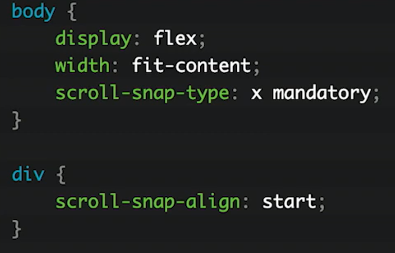
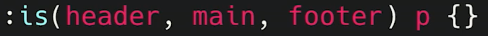

| Custom Selectors |
|
Damos formato a todos los parrafos hijos
de encabezados del 1 al 6 |
 |
| Scroll Snap |
|
| Sliders con css, para pc o movil |
 |
| Pseudo Clases |
Selectores según tipos y estado |
| Has |
|
Seleccionamos todos los elementos enlace
que tengan como hijo directo una imágen |
 |
| Is |
|
Seleccionamos todos los parrafos que tenga
como padre un elemento de clase header, main, footer |
 |
| Not |
|
Seleccionamos todos los elementos li que no
tengan la clase moreinfo |
 |